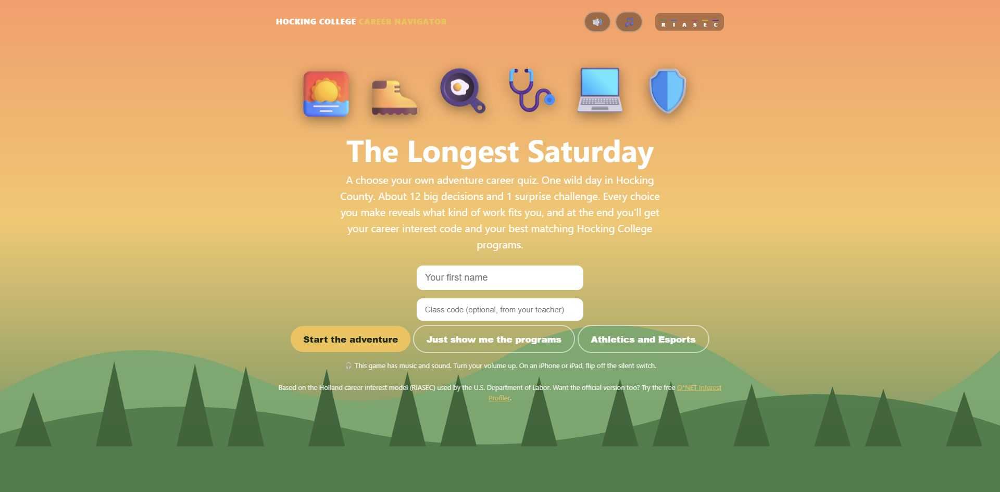

Behind every challenge,
a human purpose.
I’m Norma DePriest. I design immersive, gamified experiences to better prepare people for the workforce. I draw on real-world experience and current cybersecurity and AI use cases to turn technical ideas into decisions, challenges, and opportunities to practice.
The practitioner
I lead Hocking College’s Cybersecurity program and mentor NCL competitors. I bring that real-world experience into the immersive, gamified experiences I design for workforce preparation.
Start with a challenge. Make room to practice. Give learners a reason to reflect.
Adult education, corporate training, and technical work inform how I approach learning design.
The builder

Enter the Career Navigator case study ↗Career Navigator is a functioning career exploration game for high school students. It demonstrates my interest in making learning participatory through story and choice.
The researcher
My EdD in Instructional Design and Technology at South College is in progress. My focus is designing immersive, gamified experiences for AI and cybersecurity workforce preparation, including related inquiry into AI-supported learning.
How can choices, challenges, and feedback support technical understanding and thoughtful action?
Completed academic analysis and working games provide foundations for further inquiry. Proposed evaluations are clearly separated from completed work.
Explore questions & evidence →Make complex ideas
something people can use.
My career began in adult education and independent IT consulting. Corporate training, technical support, cloud services, and threat-intelligence work shaped how I design: start with a real challenge, create room to practice, and make progress visible.
Today, I lead Hocking College’s Cybersecurity program, mentor NCL competitors, and build interactive experiences such as Career Navigator. My EdD in Instructional Design and Technology at South College is in progress, with a focus on immersive, gamified experiences for AI and cybersecurity workforce readiness, including AI-supported learning.
Follow my career journey →